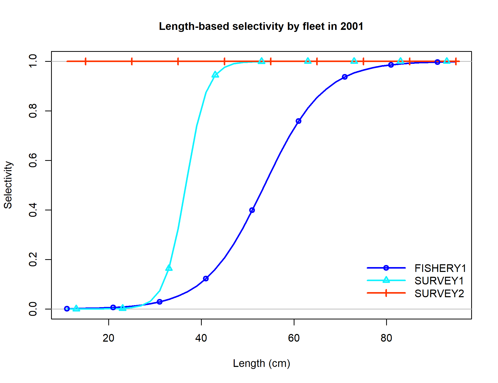
Selectivity at length for multiple fleets.
file: sel01_multiple_fleets_length1.png
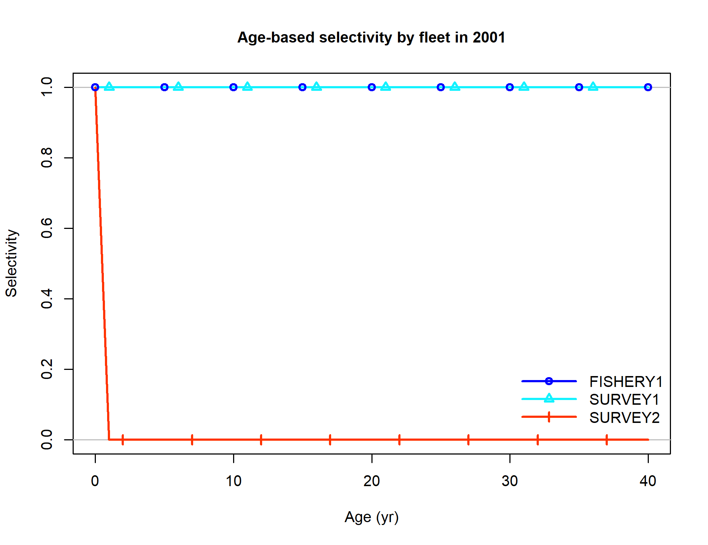
Selectivity at age for multiple fleets.
file: sel02_multiple_fleets_age1.png
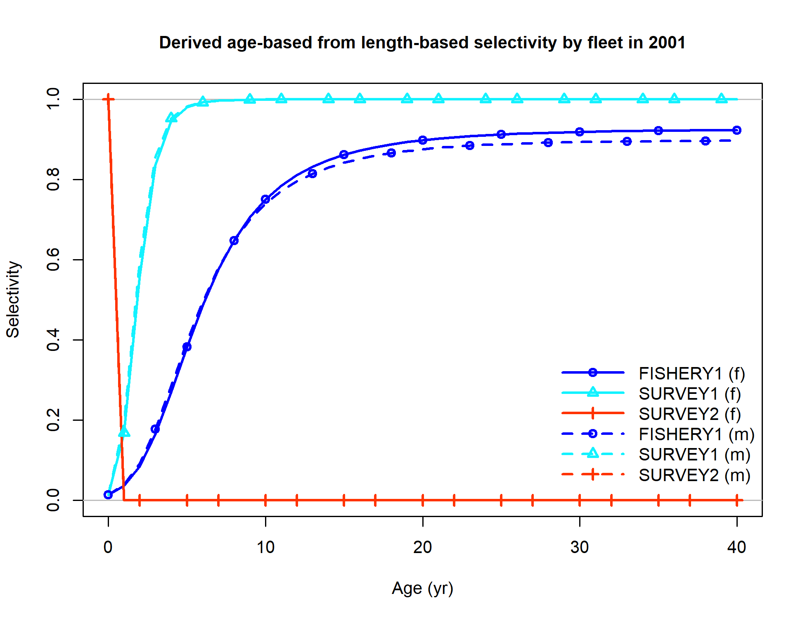
Selectivity at age derived from selectivity at length for multiple fleets.
file: sel02_multiple_fleets_age2.png
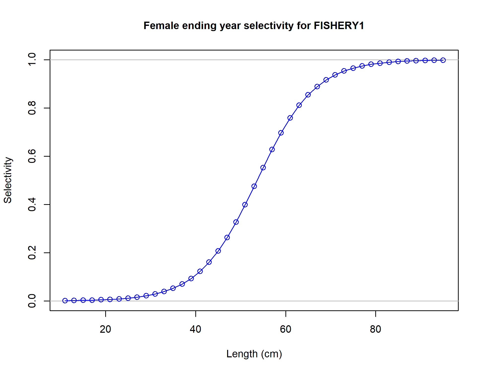
Female ending year selectivity for FISHERY1
file: sel09_len_flt1sex1.png
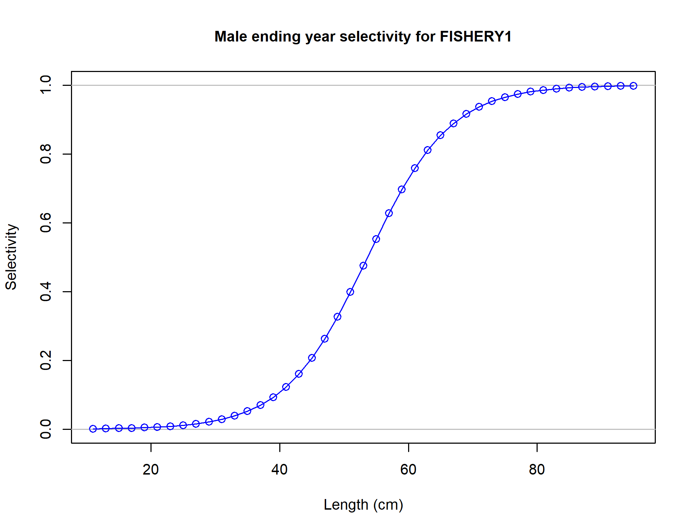
Male ending year selectivity for FISHERY1
file: sel09_len_flt1sex2.png
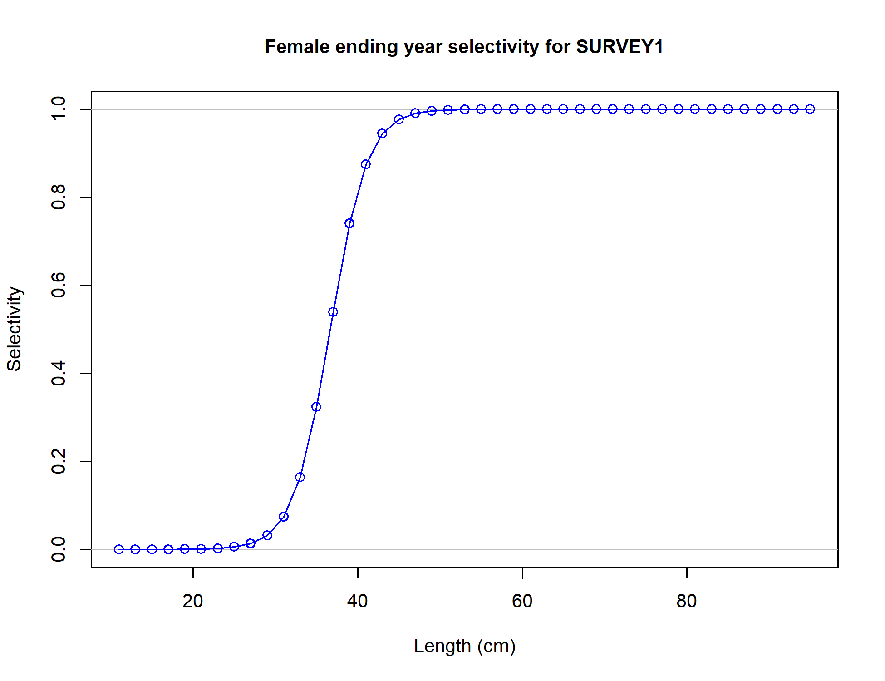
Female ending year selectivity for SURVEY1
file: sel09_len_flt2sex1.png
Male ending year selectivity for SURVEY1
file: sel09_len_flt2sex2.png
Female ending year selectivity for SURVEY2
file: sel14_age_flt3sex1.png
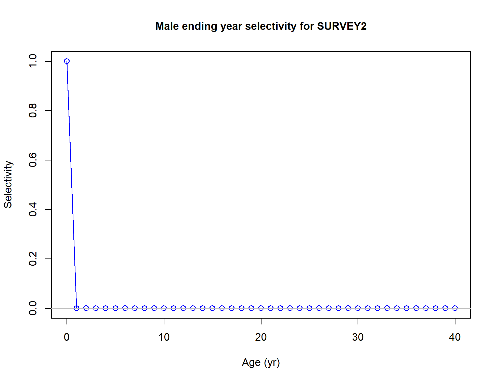
Male ending year selectivity for SURVEY2
file: sel14_age_flt3sex2.png
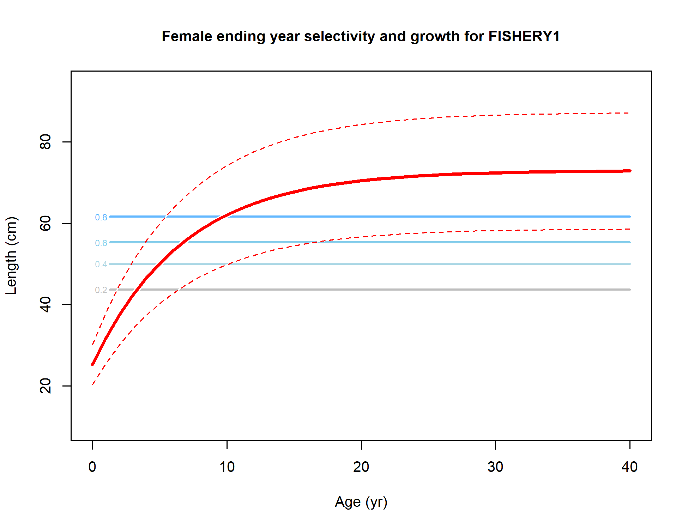
Female ending year selectivity and growth for FISHERY1
file: sel21_agelen_contour_flt1sex1.png
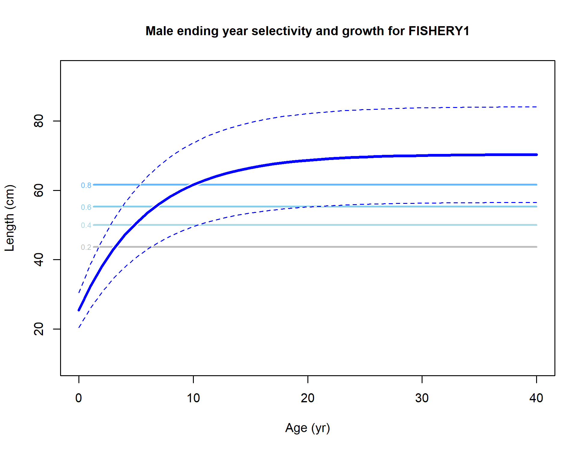
Male ending year selectivity and growth for FISHERY1
file: sel21_agelen_contour_flt1sex2.png
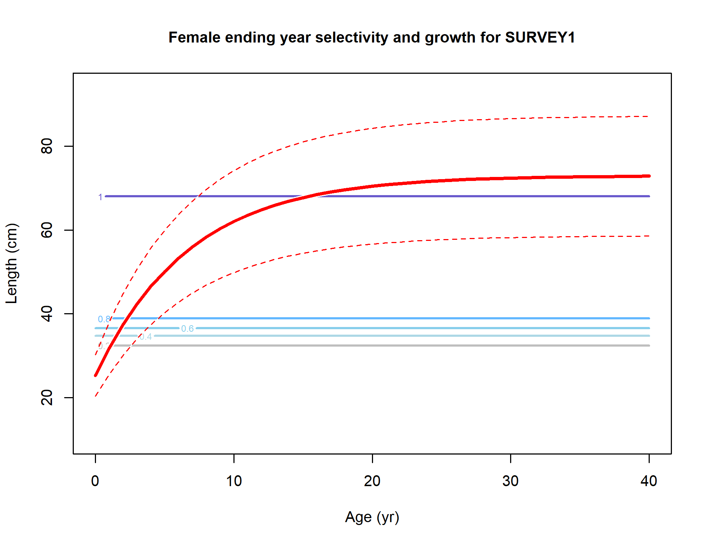
Female ending year selectivity and growth for SURVEY1
file: sel21_agelen_contour_flt2sex1.png
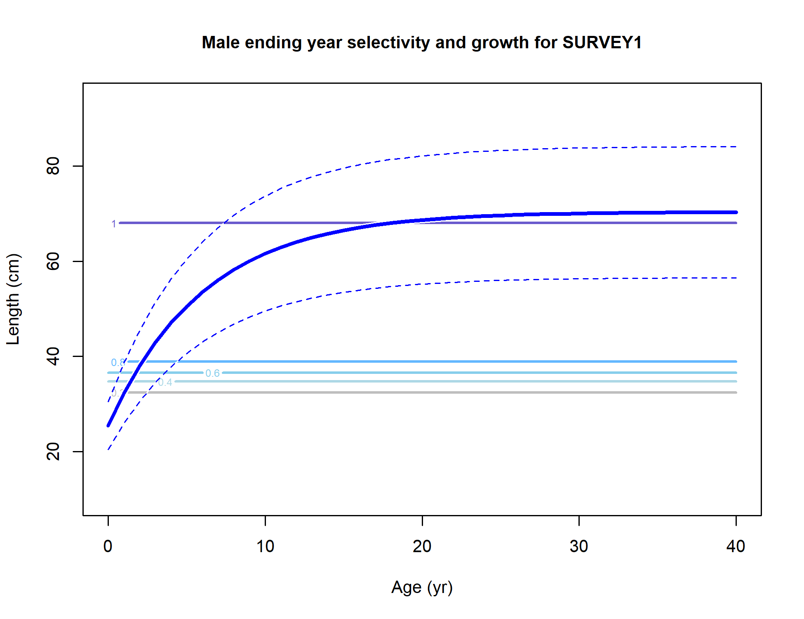
Male ending year selectivity and growth for SURVEY1
file: sel21_agelen_contour_flt2sex2.png
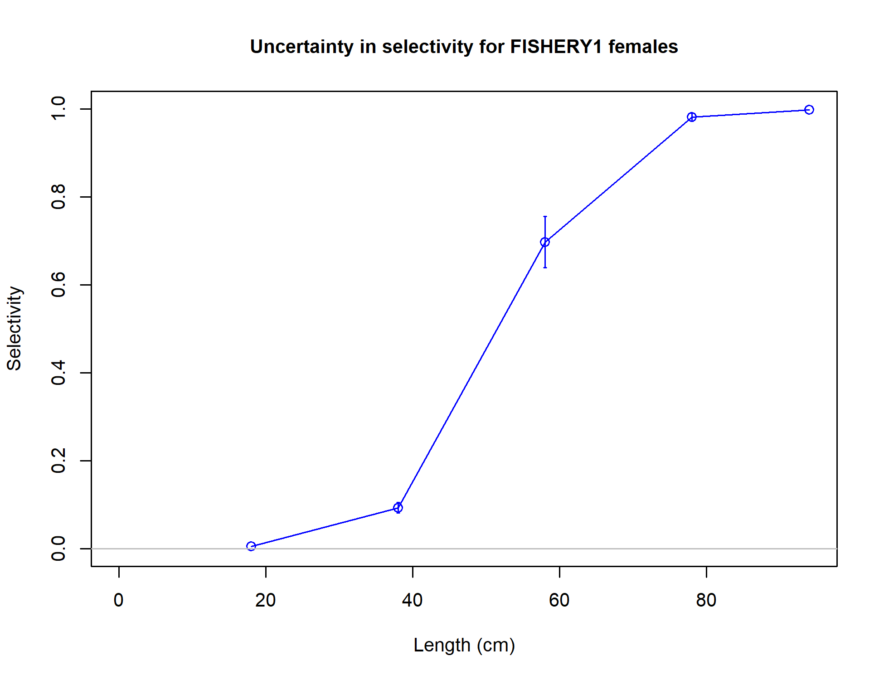
Uncertainty in selectivity for FISHERY1 females
file: sel22_uncertaintysexFem.png
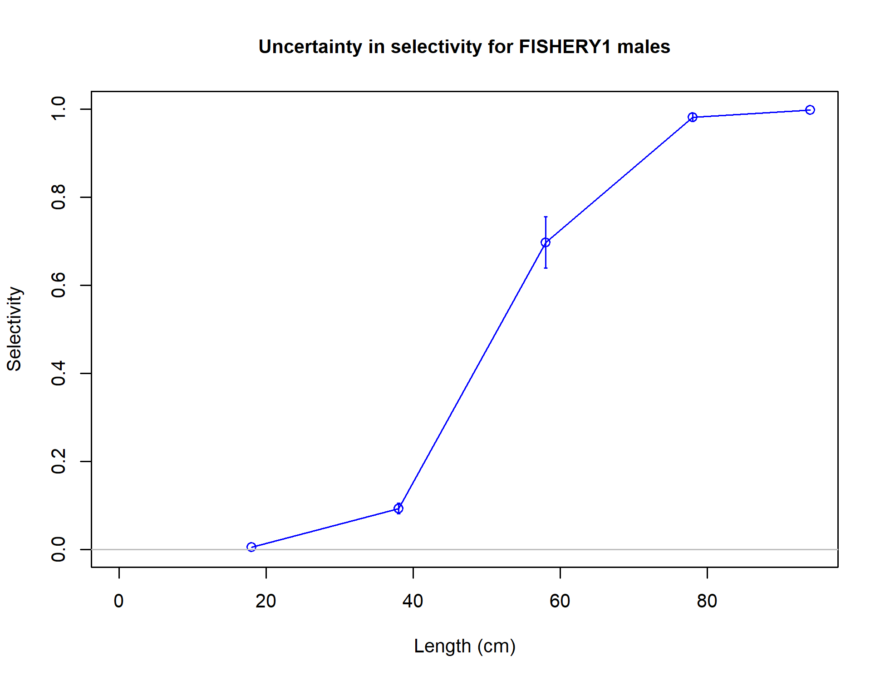
Uncertainty in selectivity for FISHERY1 males
file: sel22_uncertaintysexMal.png
{kind=link}
{kind=link}
{kind=link}
{kind=link}
{kind=link}
{kind=link}
{kind=link}
{kind=link}
{kind=link}
{kind=link}
{kind=link}
{kind=link}
{kind=link}
{kind=link}
{kind=link}